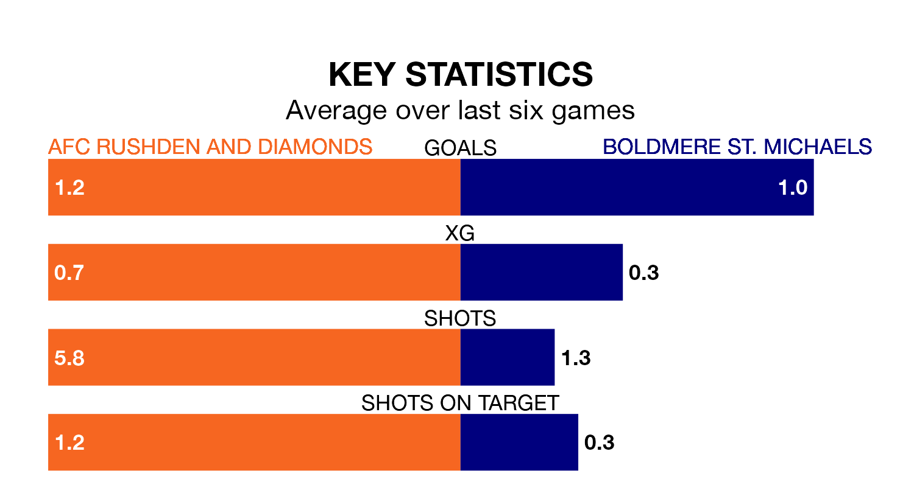

Struggling AFC Rushden and Diamonds face Boldmere St. Michaels at Hayden Road on Tuesday looking to build on a win in their last league outing.
After securing all three points with a 1-0 victory over Sutton Coldfield Town on Saturday, Rushden & Diamonds sit bottom of Northern Premier League Division One Midlands.
They travel to play a Boldmere St. Michaels side 11th in the standings, who lost in their last match, 2-0 against Leicester Road.
With 18 goals in 24 games so far this season, Rushden & Diamonds are the league's lowest scorers with 0.8 goals per game. And they are conceding more than average, letting in 50 goals at a rate of 2.1 per game.
Boldmere St. Michaels, meanwhile, are above average scorers, with 1.7 goals per game, compared to a league average of 1.5. They have conceded 1.4 goals per game.
The hosts are in mixed form in Northern Premier League Division One Midlands, with two wins and a draw from their last six games.
And also with two wins and a draw over that period, the away side's form is identical – they have both taken seven points from 18.
Updated: 09:21 (UTC), 30/01/24